Basic Tutorial
This tutorial is designed as a quick start guide to give you an overview of the most commonly used LeoCAD features without going too deep on any particular topic. Through these exercises, you will create a race car and driver and learn to:
- Browse the parts library and add new pieces to a model.
- Move and rotate pieces.
- Create a model with multiple steps.
- Change the view position and orientation.
- Object Selection.
If you haven't installed LeoCAD yet please visit the Download Page before continuing.
Getting Started
Launch the LeoCAD application, you'll see a window that looks somewhat like this:
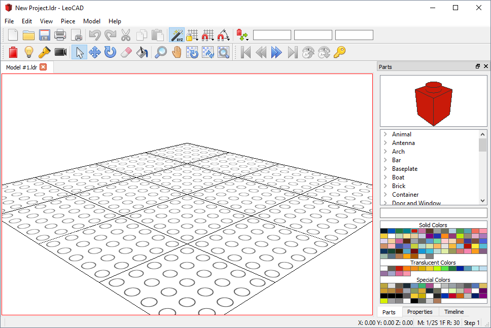
LeoCAD presents a standard graphical user interface: a titlebar, menus, and toolbars at the top; a status bar along the bottom; and a workspace with tool-windows in the center.
The left-hand portion of the workspace area is where one or more views of your model are displayed. To the right is a tool window showing a list of available parts, with a preview picture of the currently selected part and a palette of available colors. There are additional tool windows available for other operations, but they won't be featured in this tutorial.
Note that the user interface is different between Operating Systems, so if you're not running the Windows version of LeoCAD your application will differ slightly from what's shown in the pictures.
Browsing the Parts List
Start building the car by adding a blue Plate 1 x 4:
Scroll down the parts list (by default, this is displayed along the right edge of the workspace) until you find the 'Plates' group, then expand that group and select 'Plate 1 x 4'.
Now click on the blue rectangle in the color palette just below the parts list, you'll notice that the image in the top right corner changes as you select different parts or change colors to reflect your current choices.
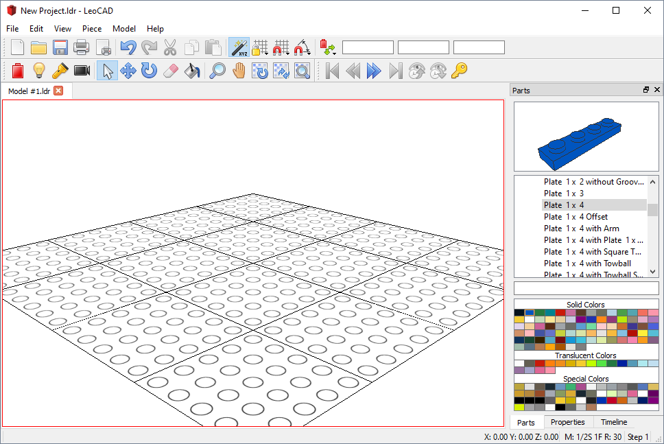
Adding a Piece
Add the Plate 1 x 4 to your model:
There several ways to add a piece to a model, the easiest one is to simply drag it from the parts list into the model view. While dragging the piece you'll see a preview of where it will be placed as you move the mouse.
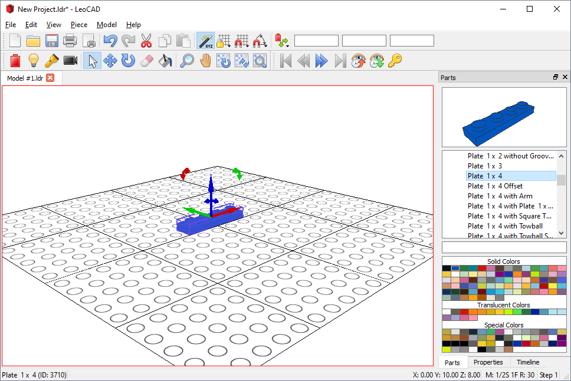
TIP: Alternatively, you can press the 'Insert' key on your keyboard, or use the 'Insert Tool' from the toolbar.
Moving Pieces
Now add a blue Plate 2 x 4:
Select Plate 2 x 4 from the parts list and to add it next to the piece you added earlier. It should be exactly 2 studs apart from the first piece, so if you didn't drop it on the right place you'll have to adjust it now.
Move your mouse over the arrows on top of the Plate 2 x 4 and notice that when it's over one of them, it will turn yellow and the mouse pointer will change to an icon with 4 arrows. This means that if you hold the left mouse button down now and move the mouse the currently selected pieces will move along the line where the arrow is.
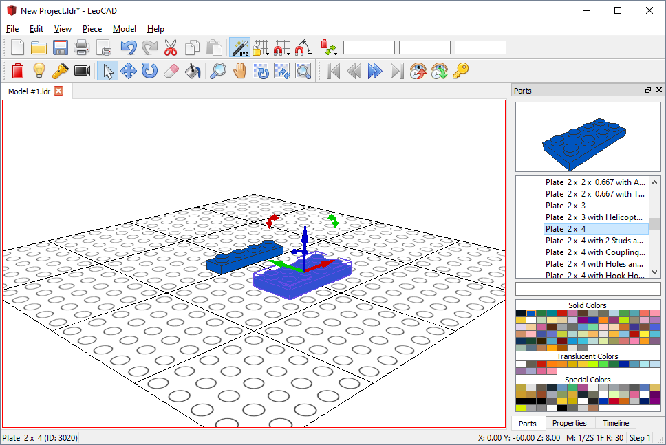
TIP: You can also use the arrows, Page Up or Page Down keys on your keyboard to move pieces, or the 'Move Tool' from the toolbar.
TIP: The grid is very useful to quickly measure the distance between pieces.
Rotating Pieces
Add a blue Plate 2 x 8 on top of the previous 2 pieces:
When you first drag the piece into the model it will be parallel to the first pieces, but we want it to be perpedicular to them so we'll need to rotate it by 90 degrees.
Move your mouse over the curved blue arrow and drag it to rotate the piece, similar to what you did to move the pieces in the previous step. You will also have to move the new piece so it's on top of the previous pieces.
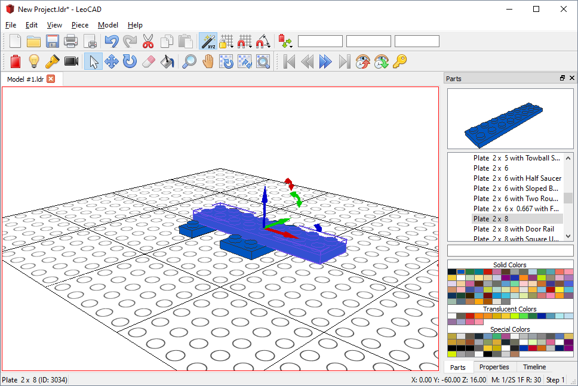
TIP: You can also use the keyboard to rotate by holding the SHIFT key down while pressing the arrows, Page Up or Page Down keys, or use the 'Rotate Tool' from the toolbar.
Building Steps
Building instructions are usually broken up into multiple steps so people can easily understand how a model is built, so let's move on to Step 2 of our model by clicking on the double right arrow on the toolbar. Notice that the current step is shown on the status bar, in the bottom right corner of the main window.
Now go to the Timeline pane (under the parts list) and you'll be able to see the step where each piece was added to the model. To make it easier for someone else to build our car, let's move the Plate 2 x 8 to Step 2 by dragging it on the Timeline.
If you go back to Step 1 in the intructions by clicking on the double left arrows you'll see that the Plate 2 x 8 is not visible there anymore and only appears on Step 2 or later.
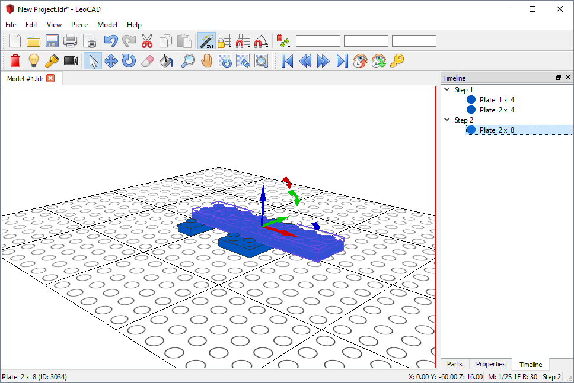
TIP: You can also press the left and right keys while holding down the ALT key to move between steps.
Searching for Parts
Now go to Step 3 of the instructions and let's add a steering wheel and mudguards next. If you're not familiar with naming convention of the Parts Library it can take a while to find out which category a part belongs to so let's use the search feature to find those parts.
Type "Mudguard" in the search box and press Enter. LeoCAD will search all parts for the text you typed and display the results under "Search Results" at the bottom of the list.
Select "Car Mudguard 2 x 4 without Studs" and add it to the model, then do the same for the steering wheel and you’ll have something like this:
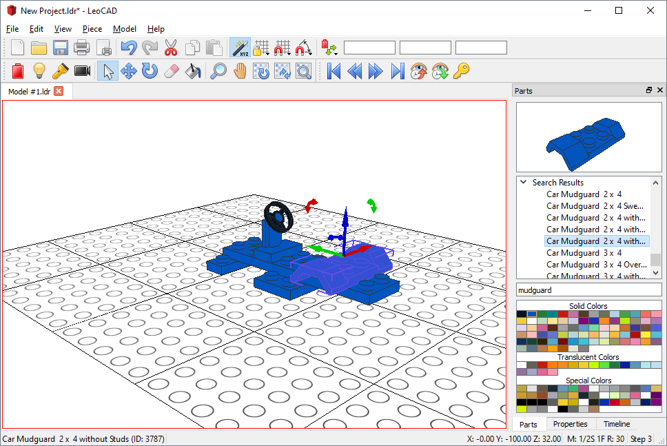
Adding More Pieces
Advance the instructions another step and add a "Slope Brick 45 2 x 2" above the mudguard and another to the front of the car.
Let’s also add another "Plate 1 x 4" to the car, here’s the picture of the almost complete car:
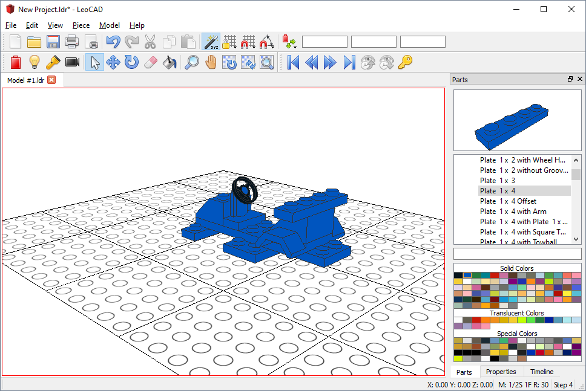
Rotating the View
Now we need to add wheels to the car so let's start by adding the wheel holders on Step 5. It's not going to be easy to see the bottom of the car from the current position so let's rotate the camera to get a better view.
Hold the ALT key down on your keyboard while you dragging the mouse using the left button and the view will rotate. With ALT pressed, dragging with the middle button will pan the view sideways, and dragging with the right button will zoom in and out.
Once you have a good view position add 2 black "Plate 2 x 2 with Wheel Holders" to the car:
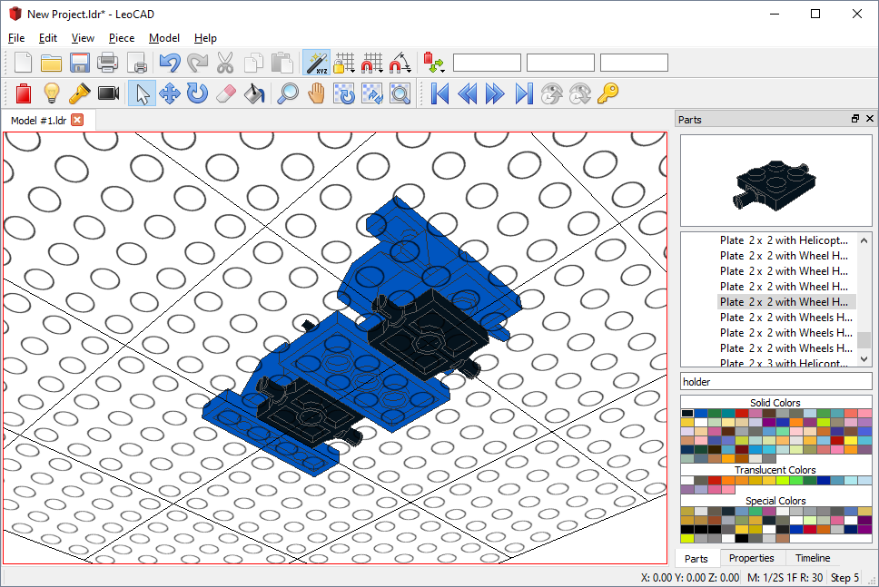
TIP: The buttons and keys for these shortcuts can be configured in the Preferences Dialog.
Movement Snap
Go to Step 6 and a grey "Wheel Rim 6.4 x 8" and a black "Tyre 6/50 x 8 Offset Tread".
If you zoom in closer you'll notice that with the default movement increments it's not possible to get the wheel to align correctly with the wheel holder, so you'll have to disable Movement Snap by clicking on the magnet icon on the toolbar
Select both the tyre and wheel at the same time by holding down the CONTROL key on the keyboard and clicking on each piece, and then move them to the correct place on the car.
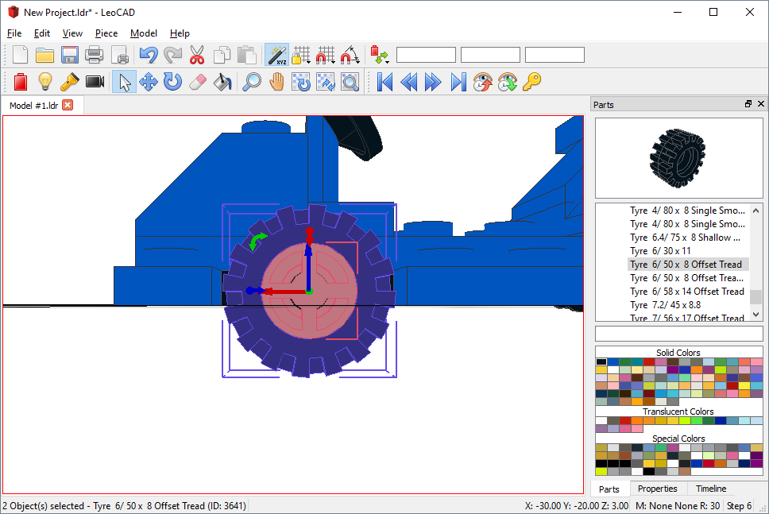
TIP: The current movement increments are shown on the status bar.
Copy and Paste
We still need 3 more sets of wheels but instead of adding new tyres and wheels one at a time we can save time by copying the ones we just added to the clipboard and pasting it back. It works like most other applications, use the keyboard or toolbar buttons to copy and paste to the clipboard.
When you paste a copy it's placed right on top of the one you copied it from, so we need to move new ones to the other side of the car. Since the car is exactly four studs wide, you can turn Movement Snap back on and set its value to 1 stud to easily position the new wheel on the other side of the car.
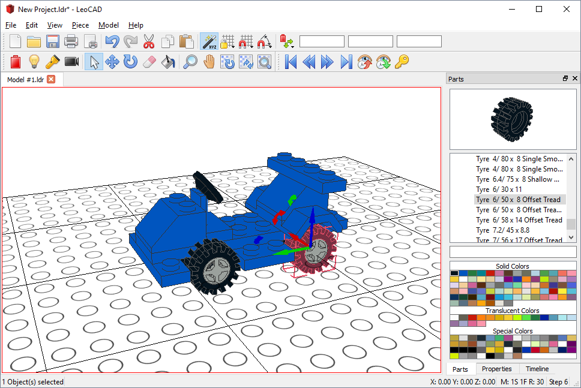
We still need one last thing to finish the project, a driver! Advance another step and select "Minifig Wizard" from the "Piece" menu, you'll see a dialog where you can customize a minifig. Select the colors and accessories you want and click "OK" to add the driver.
The finished car should look something like this:
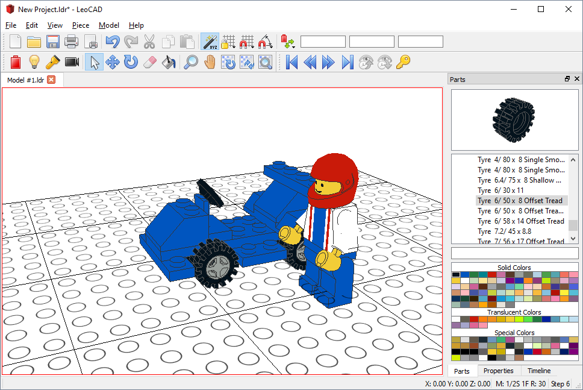
This completes the tutorial, remember that this tutorial does not teach you how to use the advanced features of the LeoCAD, this is just an introduction to the basic features.
Don't forget to save the file in case you want to come back and play with it later or send it to a friend, you can also print the instructions or have LeoCAD create a web page with them for you. Just take a look at all the options you have on the menus, you can even create raytraced pictures and use them as your desktop wallpaper if you have POV-Ray installed!